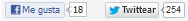

{ # bloggeando }
No, esto no es un post, solo un MoocUp
posted by i.moreno | date 3 mar 16
Este blog esta en construcción, con esto quiero decir, que lo estoy desarrollando desde 0, con Ruby on Rails. Me llevará un tiempo, calculo que un par de semanas. Podéis seguir mis avances en este repositorio de Github.
